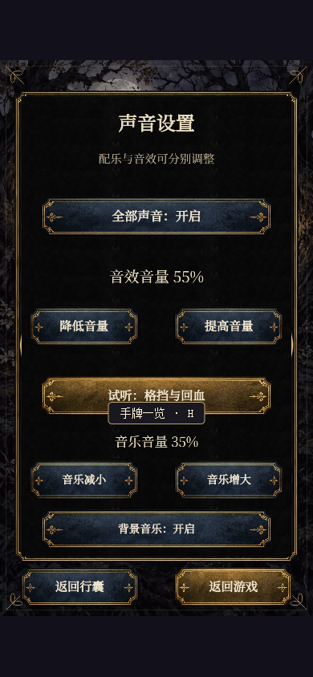
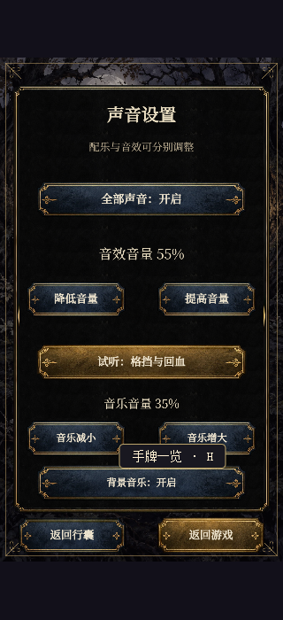

黑森林 · 音效试听
17 个原创合成音效已接入实际游戏。游戏默认音量为 55%，不同事件再按各自响度混音；下方可单独试听原始文件。
进入游戏 · 在顶部行囊中打开「声音设置」，调整音量或静音。设置自动保存。
声音设置实景


17 个原创合成音效已接入实际游戏。游戏默认音量为 55%，不同事件再按各自响度混音；下方可单独试听原始文件。
进入游戏 · 在顶部行囊中打开「声音设置」，调整音量或静音。设置自动保存。

